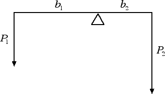
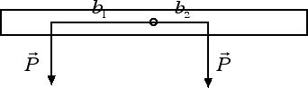

Equilibrio per rotazioni
Condizione di equilibrio
Abbiamo visto che, nel caso dei moti di traslazione, la condizione di equilibrio è data dall'annullarsi della risultante delle forze applicate al corpo. Vogliamo ora chiarire qual è la condizione di equilibrio per un corpo che è libero di ruotare. Abbiamo visto nella precedente sezione che il momento di una forza assume segni positivi o negativi a seconda del senso in cui avviene la rotazione. La condizione di equilibrio per rotazioni è data dall'annullarsi della somma di tutti i momenti che vengono applicati al corpo, ossia:
Mtot = M1 + M2 + M3 + ... = 0.
Se prescindiamo dai segni, possiamo anche dire che un corpo non ruota quando la somma di tutti i momenti orari applicati al corpo è uguale alla somma di tutti i momenti antiorari. Questa è la condizione di equilibrio per rotazioni.
Come esempio di equilibrio per rotazioni consideriamo una bilancia a bracci diseguali, come nella seguente figura:

Il peso P1 induce una rotazione antioraria di momento M1 = P1 · b1, il peso P2 induce invece una rotazione oraria di momento M2 = - P2 · b2. La bilancia sarà in equilibrio non quando i due pesi sono uguali ma quando si annulla il momento totale: Mtot = M1 + M2 = 0, ossia quando il momento antiorario P1 · b1 è uguale al momento orario P2 · b2.Quesito: Si consideri l'asta in figura: la stessa forza-peso di intensità P = 30 N viene applicata in due punti posti rispettivamente a b1 = 40 cm a sinistra e a b2 = 20 cm a destra del punto attorno al quale l'asta può ruotare. Si stabilisca dove deve essere posto un ulteriore peso di intensità P3 = 15 N per fare in modo che l'asta rimanga in equilibrio.

Risposta: Tenendo conto che a rotazioni orarie (antiorarie) corrispondono momenti negativi (positivi) avremo che il momento antiorario è M1 = P · b1 = 30 N · 0.40 m = 12 N · m. Il momento orario è invece dato da M2 = - P · b2 = - 30 N · 0.20 m = - 6 N · m. Il momento totale diventa: M = (12 - 6) N · m = 6 N · m. Questo vuol dire che, se non aggiungiamo contrappesi, l'asta tende a ruotare in senso antiorario. Pertanto il peso di P = 15 N dovrà essere posto alla destra del punto di rotazione in modo tale da produrre un momento orario M = - 6 N · m. Se indichiamo con b la distanza cercata, dovremo risolvere la seguente equazione di 1° grado: - 6 N · m = - (15 N) · b da cui b = 6 / 15 m = 0.4 m = 40 cm.